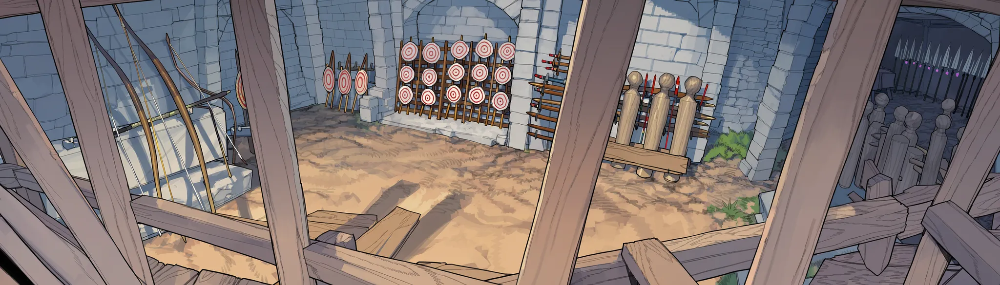

이방인을 위한 규칙서 · 벨라트 서버
규칙서
제1장
레벨
- Lv1-15절대다수가 여기서 접는다.
- Lv20-35꾸준파. 마을에서 얼굴을 알아본다.
- Lv40-50상위권. 길드가 먼저 찾아온다.
- Lv55+랭커.
- Lv64정점. 지금은 한 명.
제2장
전직
| 차수 | 조건 | 등급 | 메모 |
|---|---|---|---|
| 1차 | Lv10 | 일반 | 전직 NPC에게서. |
| 2차 | Lv40 + 실적 심사 | 희귀 | 이쯤이면 길드가 영입하러 온다. 생산 계열은 레벨 대신 제작 실적. |
| 3차 | Lv60 + 시련 | 에픽 | 정규 루트의 끝. 서버 전체에 다섯 명. |
| 히든 | 레벨 무관 | 일반~신화 | 조건을 채운 사람만. 얻는 순간 서버 로그엔 직업명만 뜬다. |
계열 아홉
검사 · 권사 · 창병 · 궁수 · 술사 · 교감자 · 치유사 · 공방 조수 · 유랑민
정규 계보 몇 가지
- 검사 → 쾌검사 → 월광검사
- 궁수 → 명궁 → 낙성궁
- 공방 조수 → 대장장이 → 블랙스미스
- 술사 → 해문술사 → 고문해자
- 파호권사(破虎拳士)유니크
- 자기보다 큰 짐승만 골라 맨손으로 잡았다. 방송 그림이 좋아서 계속했을 뿐인데. 보유 · 헤리몽
- 잔영귀(殘影鬼)전설
- 잿빛 회랑에서 이방인을 거듭 쓰러뜨리는 동안 한 번도 안 죽었다. 커뮤는 아직 조건을 못 맞혔다. 보유 · 무명
- 야장귀(夜匠鬼)에픽
- 밤에만 대장간을 돌린 사람.
- 폐서관(廢書官)희귀
- 아무도 안 읽는 고문서를 묵묵히 필사한 사람.
- 잿말잡이일반
- 잿빛 회랑에서 죽고 또 죽고, 그래도 계속 돌아온 사람. 히든직인데 일반 등급이라 커뮤 놀림감 1순위.
- 일반
- 희귀
- 에픽
- 유니크
- 전설
- 신화
등급은 지금의 강함이 아니라 잠재력. 정규 루트는 에픽에서 끝나고, 유니크부터는 히든직뿐이다. 히든직 등급은 일반부터 신화까지 제각각이라, 조건이 까다롭다고 등급이 높은 것도 아니다. 전설은 서버에 두세 명.
제4장
3차 전직자
| # | 이름 | 레벨 | 직업 | 메모 |
|---|---|---|---|---|
| 1 | 줄리엣 | Lv64 | 월광검사 | 랭킹 1위. 다섯 중 직접 만날 수 있는 건 이 사람뿐. |
| 2 | 녹턴 | Lv63 | 고문해자 | 라흐나 제2환 공략 설계자. 칼이 아니라 해독으로 올라왔다. |
| 3 | 덕배 | Lv62 | 성문장 | 파랑스 소속, 다섯 중 유일한 조직 충성파. 닉네임과 위상의 낙차로 커뮤 단골. |
| 4 | 에이프릴 | Lv61 | 낙성궁 | 아엘린 명성 최상위. 숲 밖으로 안 나온다. |
| 5 | 블루아워 | Lv60 | 해로장 | 미르젠 상단 연합 소속. 바닷길을 사실상 혼자 쥐고 있다. |
제5장
던전
| 종류 | 인원 · 주기 | 메모 |
|---|---|---|
| 소굴 | 3-5인 · 반복 입장 | 한 시간 안쪽. 매일의 벌이. |
| 유적 | 5-8인 · 주 1회 | 기믹이 있고, 스킬의 원천이 되는 고대 기록이 나온다. |
| 봉인지 | 20인 이상 · 라흐나 | 제1·2환은 Lv58-64. 제3환은 아직 아무도 못 넘었다. |
| 균열 | 무작위 · 시간 제한 | 예고 없이 열리고 닫힌다. 최초 돌파 보상이 걸려서, 소문 돌면 사람이 몰린다. |
| 이계 | 균열 너머 | 대륙 밖. 제일 어려운 곳. |
제6장
사변
- 1전조
공지는 없다. NPC 말투가 바뀌고, 물자가 사라지고, 시세가 튄다. 눈치 빠른 사람이 먼저 움직이지.
- 2발발
대륙 공지, 징집령, 통행 봉쇄. 퀘스트가 한꺼번에 쏟아진다.
- 3국면
전선과 거점 싸움. 거점 하나는 뒤집어도, 전쟁 전체를 혼자 바꾸진 못한다.
- 4결착
승리, 패배, 교착. 당신 편이 이긴다는 보장은 없음.
- 5여파
국경, 영지, 시세, 원주민의 목숨. 바뀐 건 안 돌아온다.
규모
- 개인
- 당신 행적에서 시작된다. 당신에게만 열린다.
- 국지
- 마을 습격, 산적 소굴, 영지 경계 다툼.
- 지역
- 왕국 내전, 마수 이동, 역병, 균열 다발.
- 대륙
- 국가 간 전쟁, 라흐나 범람, 칼데스 원정. 서버 전체가 휘말린다.
제7장
퀘스트
- 의뢰
- 게시판이나 NPC가 건네는 일회성 일거리.
- 연계
- 앞의 결과에 따라 다음이 갈린다. 실패해도 안 끊긴다.
- 세력
- 한쪽을 받으면, 반대쪽 문이 닫힌다.
- 히든
- 행적, 관계, 관찰로만 열린다. 위키엔 없음.
- 돌발
- 습격당하는 상단, 길가에 쓰러진 병사.
- 사변
- 징집, 보급, 정찰, 방어, 공성, 피난 호송, 탈환.
- 서버
- 서버 전체가 같이 쫓는 목표. 기여도 순위가 붙는다.
- 이방인 의뢰
- 플레이어가 플레이어에게. 현상금, 대리 사냥, 호위, 제작 주문.
예시
퀘스트 : 견습 기사의 안내
유안을 따라 수비대 훈련장에서 기본 무기를 받고, 옛 수로의 큰쥐 5마리를 처치한다.
보상 · 초심자 무기, 20골드
수락 | 거절